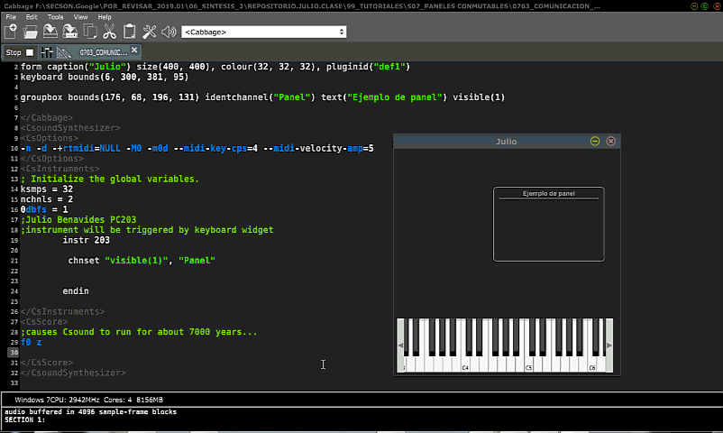

Vamos a probar manualmente el envío de datos de Csound a cabbage usando:
Csound.chnset →Función.Cabbage, identchannel →Cabbage.Formulario.
1. Crea un instrumento vacío y añade este simple panel groupbox:
groupbox bounds(176, 68, 196, 131) identchannel("Panel") text("Ejemplo de panel") visible(1)
2. Dentro de tu instrumento escribe el opcode chnset con los argumentos necesarios:
3. Ahora cambia los valores de la función visible(1) por visible(0) graba el sintetizador y observa el resultado...
...¡¡¡No pasa nada!!!
¿Por qué?: Pues porque para que Csound comunique algo, el instrumento debe empezar a operar. Y el instrumento empieza a operar cuando tocas una nota (del teclado MIDI o del teclado virtual)
¡Pruébalo y verás!

En programación siempre debemos pensar en el usuario de nuestra aplicaciones, en el código anterior tú mismo habrás sentido lo incómodo que resulta el tener que forzosamente tocar notas para que el interfaz funcione. ¿Podemos arreglar esto?. Sí.
Podemos poner en marcha nuestro sintetizador de manera automática desde el segundo cero de su creación y por el tiempo que querramos. Eso se programa en la sección score de Csound:
i 203 0 3600 significa: El instrumento 203 en el segundo 0 empieza a funcionar por 3600 segundos
O si queremos replicar la broma de Rory Walsh escribiríamos:
i 203 0 z significa: El instrumento 203 en el segundo 0 empieza a funcionar por "7 mil años" XD